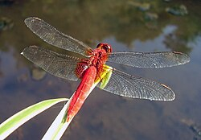
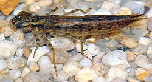

昆蟲族群與水質生物監測
水質的活體代言人：蜻蜓與豆娘
昆蟲在環境科學中是監測埤塘水質好壞極佳的「生物指標（Bioindicators）」。在霄裡大池進行生態調查時，可以輕易觀察到數量龐大的蜻蜓族群。其中最常見的是全身火紅的猩紅蜻蜓，以及在水草密集的湧泉渠道旁，能發現體型極為纖細的青紋細蟌（豆娘）。這些空中飛俠的存在，成為霄裡大池最天然的水質健檢報告。

圖片來源：維基百科 - 猩紅蜻蜓
水蠆的關鍵水生階段與健全生態鏈
蜻蜓與豆娘之所以能反映水質，關鍵在於牠們的幼蟲時期——水蠆，必須完全在水中生活一到數年。由於霄裡大池底層擁有終年不絕的清澈地下湧泉不間斷地注入，沖淡了周邊都市化的污染，使大池水體能維持在中度至良好的優良純淨水平，進而孕育了規模龐大的水蠆族群，這也間接吸引了大量鷺科鳥類前來大池捕食，形成了健康且環環相扣的埤塘生態鏈。

圖片來源：維基百科 - 水蠆